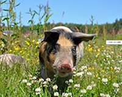

成都农民养殖特色小香猪半年收入3.6万
发布时间:2017-06-08 17:25
尽管现在卖方市场抵触情绪浓全国出栏瘦肉型生猪价格均价12.78元/公斤， 较昨日下跌0.05元/斤，比去年同期的21.17/公斤, 跌39.63%; 全国猪肉价格21.28元/公斤，较去年同期的30.86元/公斤, 跌31.04%; 三元仔猪均价37.28元/公斤，同比降44.09%。 尽管现在卖方市场抵触情绪 浓全国出栏瘦肉型生猪价格均价12.78元/公斤，较昨日下跌0.05元/斤， 比去年同期的21.17/公斤, 跌39.63%;全国猪肉价格21.28元/公斤， 较去年同期的30.86元/公斤, 跌31.04%;三元仔猪均价37.28元/公斤， 同比降44.09%。养殖户对连续降价呈现抵触情绪，出栏量下降，企业收购难度增加。 尽管现在卖方市场抵触情绪浓全国出栏瘦肉型生猪价格均价12.78元/公斤， 较昨日下跌0.05元/斤，比去年同期的21.17/公斤, 跌39.63%; 全国猪肉价格21.28元/公斤，较去年同期的30.86元/公斤, 跌31.04%; 三元仔猪均价37.28元/公斤，同比降44.09%。 尽管现在卖方市场抵触情绪 浓全国出栏瘦肉型生猪价格均价12.78元/公斤，较昨日下跌0.05元/斤， 比去年同期的21.17/公斤, 跌39.63%;全国猪肉价格21.28元/公斤， 较去年同期的30.86元/公斤, 跌31.04%;三元仔猪均价37.28元/公斤， 同比降44.09%。养殖户对连续降价呈现抵触情绪，出栏量下降，企业收购难度增加。
尽管现在卖方市场抵触情绪浓全国出栏瘦肉型生猪价格均价12.78元/公斤， 较昨日下跌0.05元/斤，比去年同期的21.17/公斤, 跌39.63%; 全国猪肉价格21.28元/公斤，较去年同期的30.86元/公斤, 跌31.04%; 三元仔猪均价37.28元/公斤，同比降44.09%。 尽管现在卖方市场抵触情绪 浓全国出栏瘦肉型生猪价格均价12.78元/公斤，较昨日下跌0.05元/斤， 比去年同期的21.17/公斤, 跌39.63%;全国猪肉价格21.28元/公斤， 较去年同期的30.86元/公斤, 跌31.04%;三元仔猪均价37.28元/公斤， 同比降44.09%。养殖户对连续降价呈现抵触情绪，出栏量下降，企业收购难度增加。 尽管现在卖方市场抵触情绪浓全国出栏瘦肉型生猪价格均价12.78元/公斤， 较昨日下跌0.05元/斤，比去年同期的21.17/公斤, 跌39.63%; 全国猪肉价格21.28元/公斤，较去年同期的30.86元/公斤, 跌31.04%; 三元仔猪均价37.28元/公斤，同比降44.09%。 尽管现在卖方市场抵触情绪 浓全国出栏瘦肉型生猪价格均价12.78元/公斤，较昨日下跌0.05元/斤，